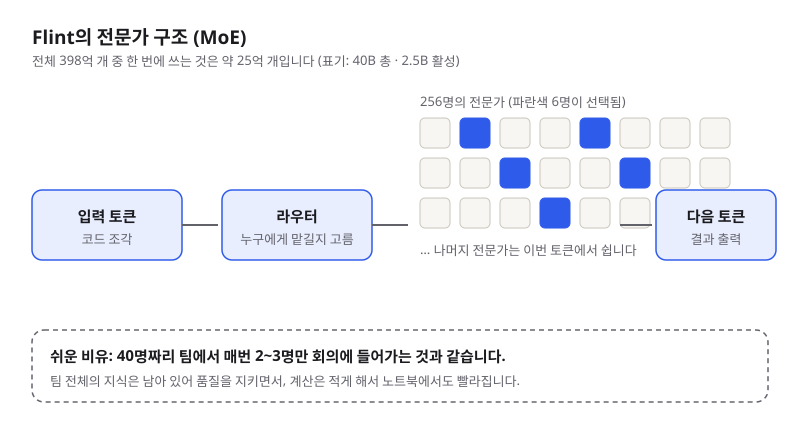
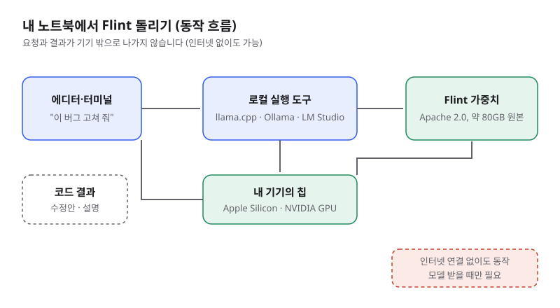

노트북에서 도는 코딩 모델 Flint, 입문자가 알아야 할 것
- 미국 스타트업 Recursive가 2026년 10월 21일 코딩 특화 오픈 모델 Flint를 공개했습니다. 총 398억 개 파라미터이지만 한 번에 쓰는 것은 약 25억 개입니다.
- Apache 2.0 라이선스로 무료 다운로드가 가능하고, Apple Silicon Mac 같은 노트북에서 빠르게 돌아가도록 설계됐습니다. 성능 수치는 회사 자체 측정치입니다.
- 입문 개발자에게는 클라우드 API 요금 없이 코드를 로컬에서 실험할 수 있는 선택지가 생겼다는 뜻입니다. 다만 대형 유료 모델만큼 세밀한 지시가 필요합니다.
Flint는 2026년 10월 21일(미국 시간) 공개된 로컬 코딩 모델입니다. 한국 시간으로는 10월 22일 새벽에 기사가 쏟아졌고, "노트북에서 돌아가는 에이전트 코딩 모델"이라는 점이 개발자 커뮤니티에서 주목받았습니다. 클라우드에 코드를 보내지 않고 내 컴퓨터에서 모델을 돌릴 수 있다는 점이 핵심입니다.
01한눈에 보기
Flint를 "전문가 256명이 있는 큰 회사"라고 생각해 보세요. 질문이 들어올 때마다 회사는 전문가 256명 중 6명만 회의에 부릅니다. 나머지는 그 순간 쉽니다. 이 방식을 MoE(Mixture of Experts, 전문가 혼합)라고 부르고, 회사 전체의 지식은 남아 있지만 한 번에 일하는 사람 수가 적어서 계산이 가벼워집니다. Flint는 총 398억 개(40B) 파라미터를 갖고 있지만, 토큰 하나를 처리할 때는 약 25억 개(2.5B)만 씁니다.

· 오픈 웨이트(open weights): 학습된 모델 파일을 누구나 내려받아 쓸 수 있게 공개한 것입니다. 학습 데이터나 코드까지 모두 공개한 것과는 다릅니다.
· 토큰: 모델이 읽고 쓰는 최소 단위. 대략 단어나 글자 조각 하나입니다.
02어떻게 동작하나요
순서는 간단합니다. 에디터에서 질문이나 코드 조각이 들어오면, 라우터(router)가 토큰마다 어떤 전문가가 적합한지 고릅니다. 선택된 전문가 6명이 계산을 하고, 그 결과를 모아 다음 토큰을 만듭니다. 이 과정을 답변이 끝날 때까지 반복합니다. 입문자라면 "모델 파일을 받아 로컬 실행 도구에 올리면 그 도구가 이 과정을 대신 해 준다"고 기억하면 충분합니다.
Recursive는 Flint를 만들 때 자사의 자동 연구 시스템 "Eureka Machine"을 많이 썼다고 밝혔습니다. 이 시스템이 아이디어를 제안하고, 구현하고, 시험한 뒤 다음 실험을 고르는 연구 루프를 돌렸다는 설명입니다. 예를 들어 Flint의 저장 크기를 71% 줄이면서도 품질 손실이 거의 없었다고 주장합니다. 이 부분은 회사 발표이므로 독립 검증이 나오기 전까지는 참고 수준으로 보세요.

03왜 지금 화제인가요
이번 주 이슈의 핵심은 "성능 숫자"보다 "노트북에서 쓸 만하다"는 점입니다. 회사 발표에 따르면 SWE-bench Verified(실제 GitHub 버그 수정 문제를 푸는 시험)에서 74.2%, SWE-bench Pro v2에서 89.7%, Terminal-Bench 2.1에서 54.9%를 기록했습니다. 같은 회사가 집계한 6개 테스트 평균에서는 Alibaba의 Qwen3.8 27B만 Flint보다 높았다고 합니다. 모두 Recursive의 자체 측정치입니다.
04관련 나라·기업
| 구분 | 이름 | 어떤 관련이 있나 |
|---|---|---|
| 나라 | 미국 | Recursive가 보도상 미국 AI 스타트업이고, 모델은 미국 회사가 공개했습니다. |
| 나라 | 중국 | 비교 상대인 Alibaba의 Qwen3.8 27B가 6개 테스트 평균에서 Flint보다 높았습니다. |
| 기업 | Recursive | 개발사. CEO는 Richard Socher(전 Salesforce 수석 과학자)이며, 2026년 5월 약 6.5억 달러 투자를 받았다고 보도됐습니다. |
| 기업 | NVIDIA | Recursive의 투자사이며, 회사가 RTX Spark에서 150토큰/초 이상을 측정했다고 밝힌 하드웨어입니다. |
| 기업 | Apple | Flint 속도 측정에 쓰인 M4 Pro MacBook Pro의 제조사입니다. |
| 기업 | Alibaba | 이번 비교에서 평균 점수가 더 높았던 Qwen 모델의 개발사입니다. |
| 기업 | 같은 기기 비교 대상인 Gemma 4의 개발사입니다. |
05기존 방식과 무엇이 다른가
| 비교 항목 | 클라우드 코딩 AI (유료 API) | Flint (로컬 실행) |
|---|---|---|
| 코드가 어디로 가나 | 회사 서버로 전송 | 내 기기 안에서 처리 |
| 비용 | 사용량만큼 과금 | 모델 무료, 전기·기기 비용만 발생 |
| 인터넷 | 필수 | 모델을 받은 뒤에는 불필요 |
| 필요한 장비 | 브라우저나 API 키 | 대용량 메모리가 있는 노트북 (예: 48GB 이상) |
| 지시 수준 | 큰 작업도 한 번에 맡기기 쉬움 | 큰 작업은 작은 단계로 나누는 편이 안정적 |
즉, Flint는 "가장 똑똑한 모델"이 아니라 "내 기기에서 개인정보와 비용 걱정 없이 굴릴 수 있는 모델"로 보는 것이 정확합니다.
06직접 해 보기
Recursive가 공개한 실행 도구 rec 기준 예시입니다. 조건은 Apple Silicon(M4 Pro·M5 Pro·M5 Max 등), 통합 메모리 48GB 이상, 여유 디스크 약 30GB, Node.js 22 이상(pi 실행용)입니다. 설치 스크립트는 실행 전에 주소를 열어 내용을 한 번 확인하세요.
# 1) 설치 (공식 GitHub 저장소 안내 명령)
curl -fsSL https://raw.githubusercontent.com/recursive-oss/rec/main/install.sh | bash
# 2) Flint를 pi 코딩 도구로 실행 (저장소에서 권장하는 방법)
rec launch piApple Silicon이 아니거나 메모리가 부족하다면, 허깅페이스의 Flint 모델 카드(huggingface.co/RecursiveSI/flint)에서 llama.cpp, Ollama, LM Studio용 양자화(용량을 줄인) 버전을 찾아 보세요. 명령어는 각 도구의 공식 문서를 따라 확인해야 합니다.
07주의할 점과 한계
- 성능 수치는 회사 측 자체 측정입니다. 독립 리더보드에는 아직 결과가 충분히 올라오지 않았다고 기록돼 있습니다 (10월 22일 기준).
- 속도는 짧은 문맥에서 잰 값입니다. 긴 코드베이스를 넣으면 체감 속도는 떨어질 수 있습니다. 권장 문맥은 256k 토큰이며, 최대 512k까지 지원합니다.
- 큰 작업은 나눠서 맡기세요. Recursive도 대형 유료 모델보다 더 많은 안내가 필요하다고 밝혔습니다. Wired 리뷰어도 작은 모델이 실수하거나 느린 경우가 있었다고 적었습니다.
- 원본 가중치는 약 80GB입니다. 노트북에서 쓰려면 양자화 버전을 받아야 하며, 양자화하면 품질이 조금 달라질 수 있습니다.
- 생성된 코드는 반드시 직접 검토하세요. 로컬에서 돌아가도 결과가 항상 옳지는 않습니다. 테스트와 코드 리뷰는 그대로 필요합니다.
08정리
Flint는 "전문가 256명 중 6명만 부르는" 구조로 노트북에서도 빠르게 돌도록 만든 Apache 2.0 오픈 코딩 모델입니다. 성능 수치는 회사 발표이고, 실제로 쓸 만한지는 여러분의 작업으로 직접 확인해야 합니다.
입문 개발자에게 좋은 첫 걸음은 거창한 설치가 아니라, 작은 함수 하나를 로컬 모델에게 설명하고 고쳐 보는 것입니다. 클라우드 AI와 로컬 AI를 같은 과제로 비교해 보면, 어떤 일을 어디에 맡길지 감이 빨리 잡힙니다.
09참고한 글
- Recursive launches Flint, a laptop coding model it says was largely built by AI TechCrunch · 2026.10.21
- Recursive Releases Flint, an Open-Weight 40B MoE Local Coding Model MarkTechPost · 2026.10.21
- Recursive releases its first model, Flint AICoder · 2026.10.21
- Recursive launches Flint, a fast open-weight coding model built to run locally CryptoBriefing · 2026.10.21
- Recursive releases Flint, 40B model for local coding TestingCatalog · 2026.10.21
- Recursive Brings Flint Coding Model to Local Machines With 2.5B Active Parameters TokenPost · 2026.10.22
- Introducing Flint (Recursive 공식 발표) Recursive · 2026.10.21
- RecursiveSI/flint (Hugging Face 모델 카드) Hugging Face
- recursive-oss/rec (실행 도구 저장소) GitHub
- Recursive Flint: 40B Local Coding Model, Specs and Scores CellCog 블로그 · 2026.10.22 (수치 교차 확인용)